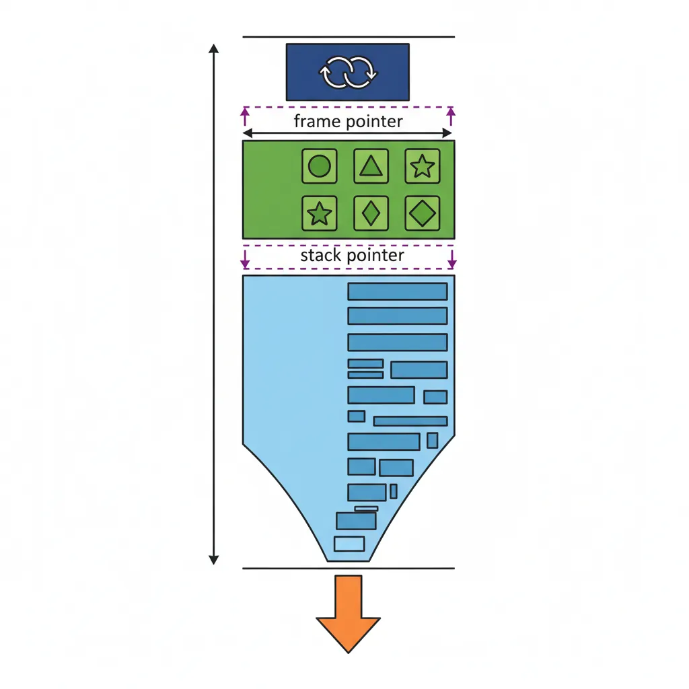
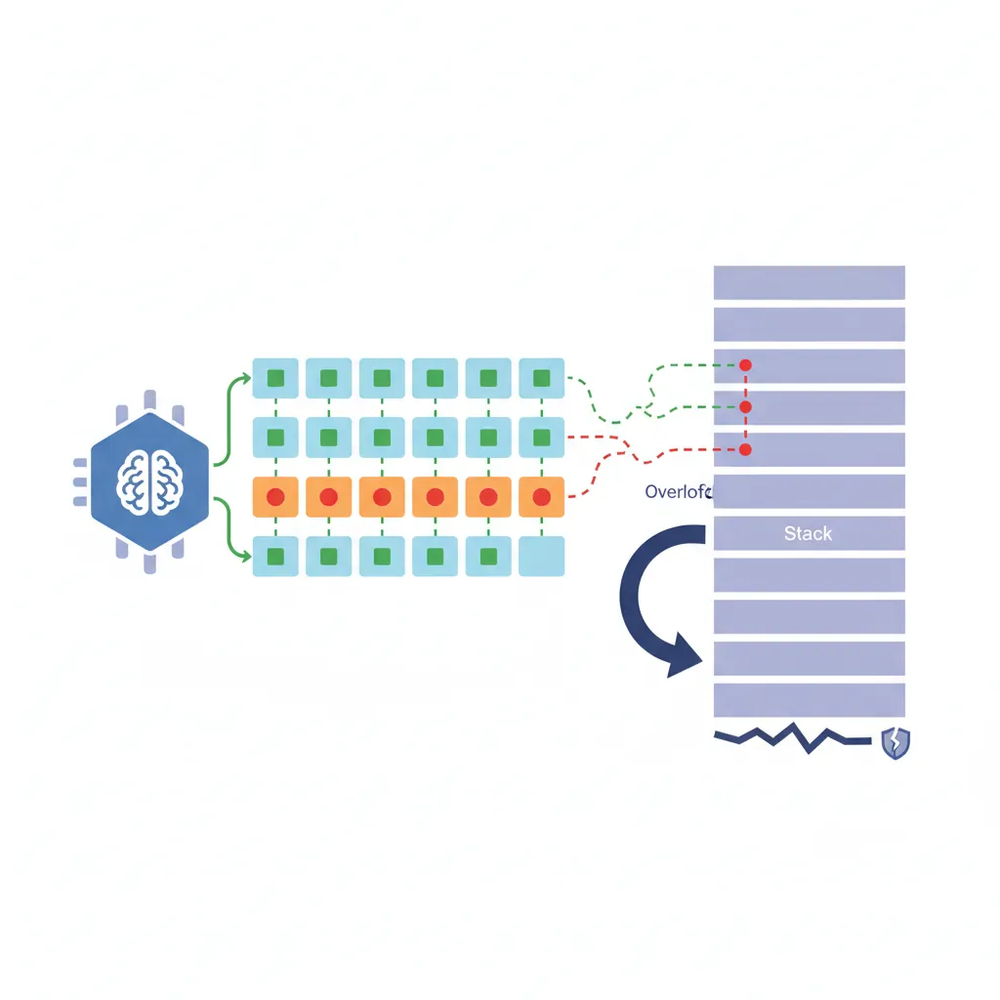
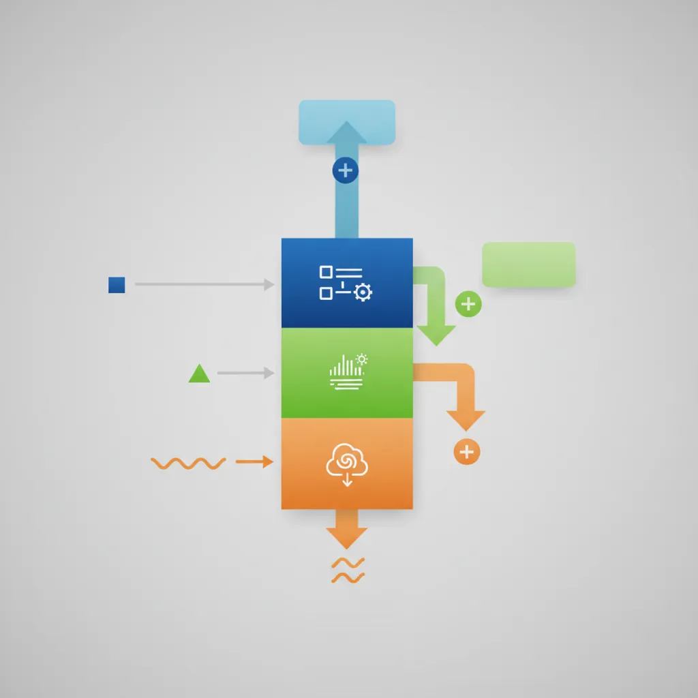
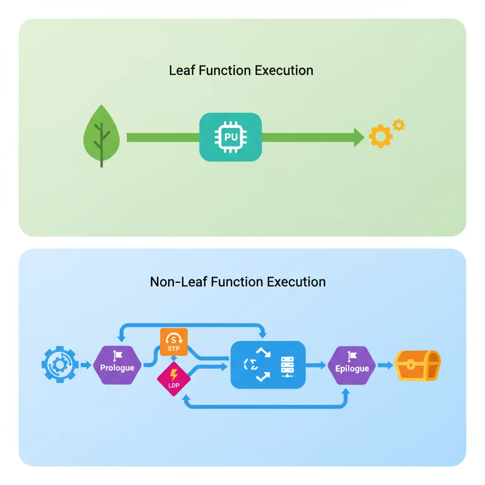

Introduction
ARM Assembly Mastery
Architecture History & Core Concepts
ARMv1→v9, RISC philosophy, profilesARM32 Instruction Set Fundamentals
ARM vs Thumb, registers, CPSR, barrel shifterAArch64 Registers, Addressing & Data Movement
X/W regs, addressing modes, load/store pairsArithmetic, Logic & Bit Manipulation
ADD/SUB, bitfield extract/insert, CLZBranching, Loops & Conditional Execution
Branch types, link register, jump tablesStack, Subroutines & AAPCS
Calling conventions, prologue/epilogueMemory Model, Caches & Barriers
Weak ordering, DMB/DSB/ISB, TLBNEON & Advanced SIMD
Vector ops, intrinsics, media processingSVE & SVE2 Scalable Vector Extensions
Predicate regs, gather/scatter, HPC/MLFloating-Point & VFP Instructions
IEEE-754, scalar FP, rounding modesException Levels, Interrupts & Vector Tables
EL0–EL3, GIC, fault debuggingMMU, Page Tables & Virtual Memory
Stage-1 translation, permissions, huge pagesTrustZone & ARM Security Extensions
Secure monitor, world switching, TF-ACortex-M Assembly & Bare-Metal Embedded
NVIC, SysTick, linker scripts, low-powerCortex-A System Programming & Boot
EL3→EL1 transitions, MMU setup, PSCIApple Silicon & macOS ABI
ARM64e PAC, Mach-O, dyld, perf countersInline Assembly, GCC/Clang & C Interop
Constraints, clobbers, compiler interactionPerformance Profiling & Micro-Optimization
Pipeline hazards, PMU, benchmarkingReverse Engineering & ARM Binary Analysis
ELF, disassembly, CFR, iOS/Android quirksBuilding a Bare-Metal OS Kernel
Bootloader, UART, scheduler, context switchARM Microarchitecture Deep Dive
OOO pipelines, reorder buffers, branch predictVirtualization Extensions
EL2 hypervisor, stage-2 translation, KVMDebugging & Tooling Ecosystem
GDB, OpenOCD/JTAG, ETM/ITM, QEMULinkers, Loaders & Binary Format Internals
ELF deep dive, relocations, PIC, crt0Cross-Compilation & Build Systems
GCC/Clang toolchains, CMake, firmware genARM in Real Systems
Android, FreeRTOS/Zephyr, U-Boot, TF-ASecurity Research & Exploitation
ASLR, PAC attacks, ROP/JOP, kernel exploitEmerging ARMv9 & Future Directions
MTE, SME, confidential compute, AI accelWhy the ABI Matters
The Application Binary Interface (ABI) is the contract that allows separately compiled object files — written in different languages, compiled by different compilers, possibly years apart — to call each other's functions. Think of it like a diplomatic protocol: if two nations agree on the same language and customs, they can cooperate without confusion. ARM's ABI for 64-bit platforms is the AAPCS64 (Procedure Call Standard for the Arm 64-bit Architecture). Violating even one rule — clobbering a callee-saved register you didn't restore, misaligning the stack — can cause silent data corruption, crashes, or security vulnerabilities that appear only under specific runtime conditions.
Register Conventions
Argument & Return Registers
The first 8 integer or pointer arguments are passed in X0–X7 (or W0–W7 for 32-bit values). The return value comes back in X0 (or X0:X1 for 128-bit returns). Register X8 has a special role: when a function returns a large struct by value (>16 bytes), the caller allocates space and passes a pointer to it in X8 — the callee writes the result through that pointer. For floating-point and SIMD, the first 8 arguments use V0–V7 independently from the integer registers, and the FP return value is in V0.
Complete Register Role Reference
| Register(s) | Role | Saved By | Notes |
|---|---|---|---|
X0–X7 | Arguments & return values | Caller | W0–W7 for 32-bit; X0:X1 for 128-bit returns |
X8 | Indirect result location | Caller | Pointer to large struct return space |
X9–X15 | Temporary / scratch | Caller | Free to use without saving; corruptible |
X16–X17 | Intra-procedure call scratch | Caller | Used by PLT veneers and linker stubs (IP0/IP1) |
X18 | Platform register | Platform | TLS on Linux; reserved on macOS/Windows; never touch |
X19–X28 | Callee-saved | Callee | Must be preserved across function calls |
X29 (FP) | Frame pointer | Callee | Points to saved FP/LR pair; enables stack unwinding |
X30 (LR) | Link register | Callee | Return address set by BL; save if making sub-calls |
SP | Stack pointer | N/A | Must be 16-byte aligned at public interfaces |
XZR / WZR | Zero register | N/A | Reads as 0; writes discarded (hardware sink) |
V0–V7 | FP/SIMD args & return | Caller | Independent from integer registers |
V8–V15 | FP/SIMD callee-saved | Callee | Only lower 64 bits (D8–D15) must be preserved |
V16–V31 | FP/SIMD scratch | Caller | Freely corruptible by callee |
Caller-Saved (Corruptible) Registers
X0–X17, V0–V7, and V16–V31 are all caller-saved (also called "volatile" or "scratch"). This means any function you call via BL/BLR is free to overwrite these without restoring them. If you need a value in X9 to survive a function call, you must save it — typically by moving it to a callee-saved register (X19–X28) or spilling it to the stack before the call.
// Caller-save pattern: preserving X9 across a function call
MOV x19, x9 // Move to callee-saved register (safe)
BL some_function // X9 may be destroyed; X19 survives
MOV x9, x19 // Restore value
// Alternative: spill to stack
STR x9, [sp, #-16]! // Push x9 to stack (16-byte aligned)
BL some_function
LDR x9, [sp], #16 // Pop x9 backCallee-Saved (Preserved) Registers
X19–X28 and the lower 64 bits of V8–V15 (accessed as D8–D15) are callee-saved. If your function uses any of these, you must save them in the prologue and restore them in the epilogue. The upper 64 bits of V8–V15 are not preserved — a subtle trap for SIMD code that uses full 128-bit Q8–Q15 registers.
SP, FP (X29), LR (X30)
Three registers have architectural significance beyond the ABI:
- SP (Stack Pointer): Must be 16-byte aligned at any public interface boundary (function entry/exit, function calls) and whenever used as a base address for load/store. The hardware traps on misaligned SP access.
- X29 (Frame Pointer): When maintained (mandatory with
-fno-omit-frame-pointer), X29 points to the saved {FP, LR} pair of the current frame, creating a linked list of frames for stack unwinding. - X30 (Link Register): Set by
BL/BLRto the return address. In non-leaf functions, you must save X30 in the prologue (it will be overwritten by any sub-call).RETbranches to the address in X30.
Stack Frame Layout
Frame Structure & Alignment
The AArch64 stack grows downward (toward lower addresses). Each function's stack frame contains, from high to low address:
- Incoming stack arguments (if any — beyond X0–X7/V0–V7)
- Saved FP (X29) and LR (X30) as a pair — always at the "top" of the frame
- Callee-saved registers (X19–X28, D8–D15) that this function uses
- Local variables and spill slots
The total frame size must be a multiple of 16 bytes. If your locals use 12 bytes, the frame is padded to 16. The STP x29, x30, [sp, #-N]! instruction both allocates the frame (decrementing SP by N) and saves the frame pointer and link register in a single atomic operation.

Prologue Pattern
// Standard AAPCS64 function prologue
my_function:
STP x29, x30, [sp, #-48]! // Allocate 48 bytes; save FP+LR
MOV x29, sp // Set frame pointer
STP x19, x20, [sp, #16] // Save callee-saved registers
STP x21, x22, [sp, #32]
// ... function body ...Epilogue Pattern
// Standard AAPCS64 function epilogue
LDP x21, x22, [sp, #32] // Restore callee-saved registers
LDP x19, x20, [sp, #16]
LDP x29, x30, [sp], #48 // Restore FP+LR; deallocate frame
RET // Return to caller via X30Local Variable Allocation
The compiler assigns stack offsets to local variables relative to SP (or FP when the frame pointer is maintained). Variables that don't fit in registers, have their address taken (e.g., passed to another function as a pointer), or are too large for a register are spilled to the stack. Alignment padding is inserted to ensure each type's natural alignment — a double at an 8-byte boundary, a __int128 at 16 bytes.
// Function with local variables
my_fn:
STP x29, x30, [sp, #-64]! // 64-byte frame
MOV x29, sp
STP x19, x20, [sp, #16] // Save callee-saved regs
// Local variable layout (relative to SP):
// [sp, #32] → int32_t count (4 bytes, 4-byte aligned)
// [sp, #36] → padding (4 bytes for alignment)
// [sp, #40] → double value (8 bytes, 8-byte aligned)
// [sp, #48] → char buf[16] (16 bytes)
MOV w0, #0
STR w0, [sp, #32] // count = 0
FMOV d0, #1.0
STR d0, [sp, #40] // value = 1.0Argument Passing Rules
Integer & Pointer Arguments
The first 8 integer or pointer arguments go in X0–X7 (W0–W7 for 32-bit types). Types narrower than 64 bits are zero-extended (for unsigned) or sign-extended (for signed) to fill the full 64-bit register. A 128-bit integer (e.g., __int128) occupies a pair of consecutive registers — the first 128-bit arg uses X0:X1 (low half in X0).

// C: int64_t sum(int a, long b, char *p, unsigned short s)
// a → w0 (sign-extended to x0), b → x1, p → x2, s → w3 (zero-extended)
sum:
SXTW x0, w0 // Sign-extend int a to 64-bit
ADD x0, x0, x1 // x0 = a + b
LDRB w4, [x2] // Load byte from *p
ADD x0, x0, x4
ADD x0, x0, x3 // + s (already zero-extended)
RETFloating-Point & SIMD Arguments
FP and SIMD arguments use a completely separate set of registers from integers. The first 8 go in V0–V7 (as S0–S7 for float, D0–D7 for double, or Q0–Q7 for 128-bit SIMD). This means a function with 4 integer + 4 float arguments uses X0–X3 for the ints and V0–V3 for the floats simultaneously — no conflict. Return value comes back in V0 (or V0:V1 for 128-bit returns).
Stack Argument Overflow
When integer registers X0–X7 are exhausted, subsequent integer arguments are pushed onto the stack in left-to-right order, each 8-byte aligned. The same rule applies to FP/SIMD arguments beyond V7. The callee accesses overflow arguments at positive offsets from the frame pointer: [x29, #16] is the first stack argument (above the saved FP/LR pair).
// C: void many_args(int a, int b, ..., int i, int j)
// X0=a, X1=b, ..., X7=h, stack: [sp]=i, [sp+8]=j
caller:
// ... load X0-X7 with first 8 args ...
MOV x9, #9 // 9th argument
MOV x10, #10 // 10th argument
STP x9, x10, [sp, #-16]! // Push args 9-10 to stack
BL many_args
ADD sp, sp, #16 // Caller cleans up stack argsStruct Passing Rules
Struct passing follows three rules based on size and composition:
- Small structs (≤16 bytes) with no unaligned fields are decomposed and passed in up to two registers (e.g., a struct with two
int64_tfields goes in X0:X1). - Large structs (>16 bytes) are passed by reference — the caller copies the struct to memory and passes a pointer in an integer register.
- Homogeneous Floating-Point Aggregates (HFA) — structs with up to 4 identical FP fields (e.g.,
struct { float x, y, z, w; }) use V registers directly: V0–V3 for a 4-element HFA.
Struct Passing in Practice: Graphics Vertex Data
A 3D vertex is often struct Vertex { float x, y, z; } (12 bytes, 3 floats). This qualifies as an HFA — 3 identical float members. It's passed in V0 (x), V1 (y), V2 (z) as single-precision scalars — zero memory copies, maximum throughput. A struct Matrix4x4 { float m[16]; } (64 bytes) is too large — it goes by reference via a pointer in X0. Understanding these rules lets you design data structures that play well with the ABI's register-based fast path.
Variadic Functions
va_list Layout in AArch64
AArch64's va_list is a struct with four fields (not a simple pointer like on some architectures):
__stack— pointer to the next stack argument (for overflow args beyond X7/V7)__gr_top— pointer to the top of the General Register save area__vr_top— pointer to the top of the Vector Register save area__gr_offs— offset from__gr_topto the next GP argument (negative, counting up to 0)__vr_offs— offset from__vr_topto the next FP/SIMD argument (negative)
A variadic function's prologue saves all 8 GP registers (X0–X7) and all 8 FP registers (V0–V7) to the register save area on the stack, so va_arg can retrieve unnamed arguments from either area. This is more complex than x86-64 but avoids the need for stack probing.

Implementing va_arg in Assembly
For an integer va_arg: check __gr_offs — if it's less than 0, the next argument is still in the register save area at __gr_top + __gr_offs. Increment __gr_offs by 8. If __gr_offs reaches 0, all GP save slots are consumed; subsequent arguments come from __stack (the overflow area), advancing the pointer by 8 each time. For FP arguments, the same logic applies using __vr_offs/__vr_top with 16-byte increments (SIMD register width).
// Simplified va_arg for integer type
// va_list in [x19]: __stack, __gr_top, __vr_top, __gr_offs, __vr_offs
LDRSW x0, [x19, #24] // Load __gr_offs
CBZ x0, .use_stack // If 0, GP save area exhausted
ADDS x0, x0, #8 // Advance offset
STR w0, [x19, #24] // Store updated __gr_offs
LDR x1, [x19, #8] // Load __gr_top
SUB x0, x0, #8 // Back to original offset
LDR x0, [x1, x0] // Load argument from save area
B .va_arg_done
.use_stack:
LDR x1, [x19] // Load __stack
LDR x0, [x1], #8 // Load arg, advance stack pointer
STR x1, [x19] // Store updated __stack
.va_arg_done:
// x0 = next variadic integer argumentLeaf Functions & Optimisations
Leaf Function (No Frame)
A leaf function — one that makes no further function calls — is the most efficient function form on AArch64. If it only uses caller-saved registers (X0–X15), it does NOT need to save LR, does NOT need a stack frame, and does NOT need to adjust SP. The entire function is just the body plus RET. This eliminates the STP/LDP prologue/epilogue overhead entirely — a significant win for small utility functions called millions of times.

// Leaf function — no frame needed
add_two:
ADD x0, x0, x1 // Return x0 + x1
RET // LR untouched; no frameTail-Call Optimisation
If the last action of a function is a call whose return value is immediately returned, the call overhead can be eliminated entirely. Instead of BL target; RET, the function restores its callee-saved registers and frame, then uses B target (not BL). The tail callee returns directly to the original caller — the intermediate frame vanishes. This is critical for recursive algorithms (it converts recursion to iteration) and for wrapper/forwarding functions.
// Tail-call example: forward() → B to target()
forward:
STP x29, x30, [sp, #-16]!
MOV x29, sp
// ... modify args if needed ...
LDP x29, x30, [sp], #16 // Restore frame
B target // Tail call (not BL)Inline Expansion
At -O2/-O3, GCC and Clang inline short functions — the function body is copied directly into the call site, eliminating all call overhead (no BL, no frame setup, no register save/restore). More importantly, the compiler can now optimise across the caller/callee boundary: propagate constants, eliminate dead code, and schedule instructions freely. Functions declared static inline or with __attribute__((always_inline)) are strong inline hints. Understanding what the compiler inlines helps when writing mixed C/assembly code — if you force a function to be in a separate .s file, it cannot be inlined.
static inline). If it's 20+ instructions with SIMD/crypto, hand-write it in a .s file and accept the call overhead — the per-instruction gains outweigh the BL/RET cost. The middle ground (5–20 instructions) is where inline assembly (asm volatile) shines.
Stack Frames & Debugging
Frame Pointer Chains
With -fno-omit-frame-pointer, every function's X29 points to the saved X29 of its caller, forming a linked list of stack frames. Walking this chain gives a complete stack trace even without symbol information — essential for debuggers, profilers (like Linux perf), and crash reporters. Each frame's {FP, LR} pair tells you: "who called me (LR) and where to find the next frame (FP)."
// Walking the frame pointer chain (stack unwinding)
// X29 (FP) → [saved_FP, saved_LR]
// saved_FP → [prev_FP, prev_LR]
// prev_FP → ... until FP == 0 (bottom of stack)
unwind:
MOV x0, x29 // Start with current frame pointer
.walk:
CBZ x0, .done // FP == 0 means bottom of stack
LDR x1, [x0, #8] // Load saved LR (return address)
// ... record x1 for stack trace ...
LDR x0, [x0] // Follow chain to caller's FP
B .walk
.done:DWARF Unwind Info
Even when the frame pointer is omitted (-fomit-frame-pointer, the default at -O2), compilers emit DWARF unwind information in .eh_frame and .debug_frame sections. These contain Canonical Frame Address (CFA) rules describing, for every instruction in the function, how to compute the previous frame's SP and where each callee-saved register was stored. Tools like GDB, perf, and Apple Instruments use this data to reconstruct full call stacks without requiring frame pointers.
// GAS .cfi_* directives that generate DWARF unwind info
my_function:
.cfi_startproc // Begin unwind info for this function
STP x29, x30, [sp, #-32]!
.cfi_def_cfa_offset 32 // CFA = SP + 32
.cfi_offset x29, -32 // X29 saved at CFA - 32
.cfi_offset x30, -24 // X30 saved at CFA - 24
MOV x29, sp
.cfi_def_cfa_register x29 // CFA now tracked via X29
STP x19, x20, [sp, #16]
.cfi_offset x19, -16
.cfi_offset x20, -8
// ... function body ...
LDP x19, x20, [sp, #16]
.cfi_restore x19
.cfi_restore x20
LDP x29, x30, [sp], #32
.cfi_restore x29
.cfi_restore x30
.cfi_def_cfa sp, 0
RET
.cfi_endprocWhy Apple Mandates Frame Pointers on macOS/iOS
Apple's AArch64 ABI requires frame pointers on macOS and iOS (-fno-omit-frame-pointer is the default for Apple targets). This decision trades ~1–2% performance (one extra register consumed) for reliable crash reporting from every user device. When an app crashes, the kernel captures the frame pointer chain in the crash log — without DWARF data, without debug symbols. Apple's crash reporter translates these to symbolicated stack traces server-side. This is why Apple crash logs always have complete backtraces, while Linux core dumps sometimes don't.
Conclusion & Next Steps
This part formalised the AAPCS64 calling convention — the contract that makes all AArch64 software interoperate. We covered register conventions (X0–X7 for arguments, X19–X28 callee-saved, X30 as the link register), the canonical prologue/epilogue with STP/LDP for frame setup and teardown, local variable layout with 16-byte alignment, argument passing rules for integers, floating-point, stack overflow, structs, and HFAs, variadic functions with the five-field va_list struct, leaf functions that skip the frame entirely, tail-call optimisation via B instead of BL, and stack unwinding via frame pointer chains and DWARF CFA rules.
- Factorial Function: Write a recursive
factorial(n)in AArch64 assembly. Include a proper prologue saving X29/X30/X19, use X19 to holdnacross the recursive BL, and add .cfi_* directives. Verify the stack trace with GDB. - Variadic Printf Helper: Write a function
my_printf(const char *fmt, ...)that counts how many%dtokens appear in the format string and returns the count. Use the va_list mechanism to walk the register save area. - Tail-Call Refactor: Take a non-tail-recursive function (e.g., linked list traversal) and refactor it to use tail-call optimisation with
Binstead ofBL. Compare stack depth with and without the optimisation.